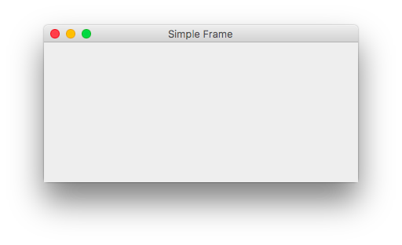

Jobsheet 15
Graphical User Interface
Table of Contents
1 Kompetensi
Setelah menempuh pokok bahasan ini, mahasiswa mampu:
2 Pendahuluan
3 Percobaan
3.1 Percobaan 1
3.1.1 Langkah Percobaan
- Bukalah program teks editor atau IDE (netbeans) yang sudah terinstall di komputer anda!
Buat class baru dengan nama
SimpleFramepublic class SimpleFrame extends javax.swing.JFrame { }
Kemudian tambahkan constructor ke dalam class
SimpleFrame// .... public Simpleframe() { super("Simple Frame"); } // ....
Tambahkan method dengan nama
initUI()dengan akses modifierprivate// .... private void initUI() { } // ....
Pada body method
initUI()tambahkan perintah berikut.private void initUI() { setDefaultCloseOperation(WindowConstants.EXIT_ON_CLOSE); setLayout(new FlowLayout()); setSize(400, 400); setLocationRelativeTo(null); }
Untuk menggunakan class
WindowConstantsdanFlowLayoutanda perlu mengimport classnya terlebih dahulu yang terdapat dalam packagejavax.swing.WindowConstantsdanjava.awt.FlowLayout.Buatlah main program dari class tersebut
// .... public static void main(String[] args) { SimpleFrame frame = new SimpleFrame(); frame.setVisible(true); } // ....
Compile kemudian jalankan program.

- Jika langkah-langkah dilakukan dengan benar, maka akan muncul sebuah frame window.
private void initUI() { setDefaultcloseOperation(WindowConstants.EXIT_ON_CLOSE); // Deklarasi dan instansiasi helloButton JButton helloButton = new JButton("Hello World!"); // Menambahkan tombol helloButton ke dalam frame add(helloButton); // ... }
Supaya
ActionListenerdanActionEventdikenali, importjava.awt.event.ActionListenerdanjava.awt.event.ActionEventterlebih dahulu.Tambahkan event handling ke tombol, sisipkan kode setelah baris instansiasi tombol
helloButton.// .... JButton helloButton = new JButton("Hello World!"); // Menambahkan event ke tombol helloButton helloButton.addActionListener(new ActionListener() { @Override public void actionPerformed(ActionEvent e) { } });
Untuk memunculkan pesan dialog, digunakan class
JOptionPane. Tambahkan baris kode berikut dalam methodactionPerformed(ActionEvent e).// .... // Menampilkan pesan dialog JOptionPane.showMessageDialog(SimpleFrame.this, "Hello Wolrd!", "Hello", JOPtionpane.INFORMATION_MESSAGE); // ....
Import
JOptionPanedarijavax.swing.JOptionPane.- Compile dan jalankan program, jika langkah-langkah dilakukan dengan benar maka akan muncul sebuah dialog ketika tombol ditekan.